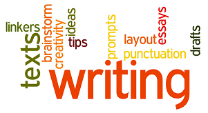

Here are 10 of my top IELTS writing tips. They focus on the writing process in the exam. Much the most important tip is number 1.

Rule number 1 is to answer the question: read the question carefully and underline all the information you need to include. This works differently in the essay and the report.
In the essay, often you will find background information and the question itself. Make sure you answer the question
(eg “Do you agree?”) and do not write generally about the topic. If you copy another essay you have written on the same topic, you will lose a lot of marks.
In task 1, all the information you need to include is in the chart/graph: make sure you identify the key points before you start writing.
It is important to finish both pieces of writing, but the way to do this is not necessarily starting to write immediately. If you do that, you may get half way through the writing and realise you cannot finish it. Only start writing when you know how you are going to finish.
In the essay this can mean up to 10 minutes and in the task 1 report it can mean up to 5 minutes. The more you think, the better and more quickly you will write. 2/3 minutes is almost certainly not enough.
250 means AT LEAST 250 and 150 means AT LEAST 150.
The more words you write, you more mistakes you are likely to make. The more words you write, the less efficient you become and the quality will fall. The ideal is to aim for between 260 – 280 words in the essay and 160-180 words in the report.
If you copy whole sections of the question, the examiner will not include those words in your word count: 260 words can become 230 words if you are not careful.
Timing can be a problem. It is important to keep moving and stick to your timing. Don’t be tempted to spend more than 40 minutes on your essay – you need 20 minutes to answer task 1 properly.
The essay is worth twice the marks of the report. One idea is to do task 2 (the essay) before task 1(the report), just to ensure you finish the essay. You do need to spend at least 20 minutes on part 1 though. Do not try to answer it in 15 minutes.
It is important to check your writing for grammatical errors. You need to have a checklist before you enter the exam of what mistakes you typically make.
You should also check your writing for unnecessary word repetition – you are graded on the variety of your language. You should note that this does not mean you need to use long, complex words, rather it means you should use precise words.
The examiner will not spend very long grading your paper. You need to create an immediate good impression and the best way to do this in my experience is to present a well-structured piece of writing with clearly laid out paragraphs. This way the examiner is going to be on your side. If, however, it looks disorganised, the examiner is not going to be impressed.